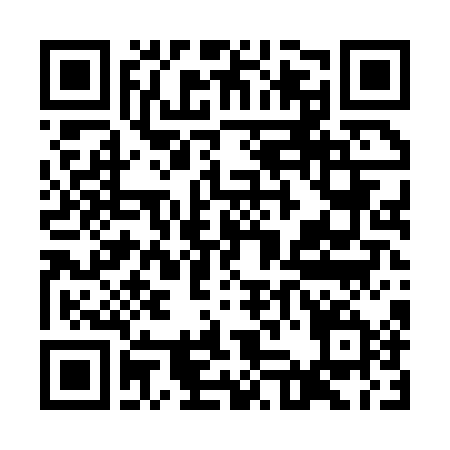

<!doctype html><html lang="fr"><meta charset="utf-8"><meta name="viewport" content="width=device-width,initial-scale=1"><meta name="robots" content="noindex"><title>PILOTE-008</title><style>
*{box-sizing:border-box}body{margin:0;background:#f3f6ee;color:#17352b;font:16px/1.6 system-ui,sans-serif}header{background:#142e28;color:#fff;padding:14px 22px}main{max-width:780px;margin:auto;padding:18px}section{background:white;border:1px solid #dbe4da;border-radius:14px;padding:18px;margin:14px 0}a{color:#176444;font-weight:680}h1{font:400 clamp(2rem,7vw,4rem)/1.1 Georgia,serif;margin:.3em 0}h2{font-size:1.2em}dl,ul{display:grid;grid-template-columns:repeat(auto-fit,minmax(120px,1fr));gap:10px;padding:0}ul{list-style:none}dd{margin:0;font-weight:650}dt,small{color:#51665c}.badge{background:#e2f1df;border-radius:20px;padding:4px 10px;color:#145639;font-weight:650}img{max-width:100%}
</style><header><b>Passeport batterie</b></header><main><p><a href="../../">Retour au lot</a> · <a href="en/">English</a></p><section><span class="badge">Données fictives</span><h1>Ville 360</h1><p>Roue Claire · PILOTE-008</p></section><section><h2>Caractéristiques de la batterie</h2><dl><div><dt>Numéro de série</dt><dd>PILOTE-008</dd></div><div><dt>Mois de fabrication</dt><dd>2027-02</dd></div><div><dt>Référence</dt><dd>RC-360</dd></div><div><dt>Version</dt><dd>1</dd></div><div><dt>Capacité</dt><dd>10 Ah</dd></div><div><dt>Tension nominale</dt><dd>36 V</dd></div><div><dt>Chimie</dt><dd>Li-ion (NMC)</dd></div></dl></section><section><h2>QR code</h2><a href="qr.png" download></a></section></main></html>